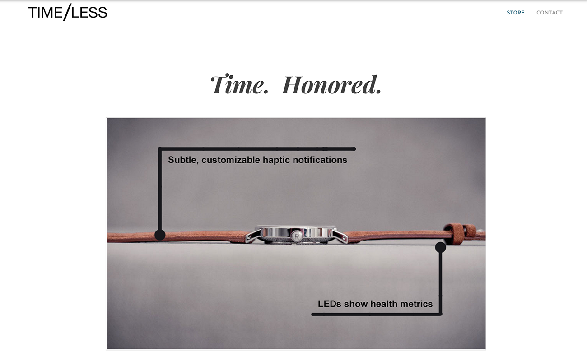
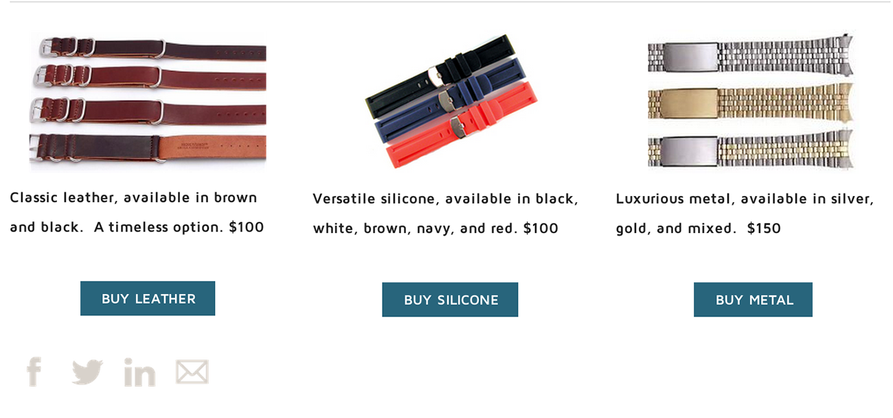

Beginning with the idea of a smart watchband that would afford a user smart watch benefits while allowing him to retain a classic watchface, my team worked on branding the product to appeal to our market.
We focused in on the type of person who would want the latest technology but also want to keep a classic watchface. We felt the decision would be greatly based on aesthetic preferences, and also on a sense of tradition. We worked to convey a technology rooted in respect for tradition and class: a different, warmer, approach.
Traditional, but interested in the latest technology.
Current smart watch offerings afford a particular look that isn't desirable for many watch-wearers.
A smart band allows wearers to keep previous watchfaces while still subtly enjoying wearable technology.
We designed a band that uses haptic notifications (squeezing the wearer's wrist) to alert the wearer of certain events. The notifications can be linked to timers, text and email receipt, or other concerns. LEDs on the rear of the band are also able to display health metrics. The overall impression is one of subtlety and digital etiquette.
 